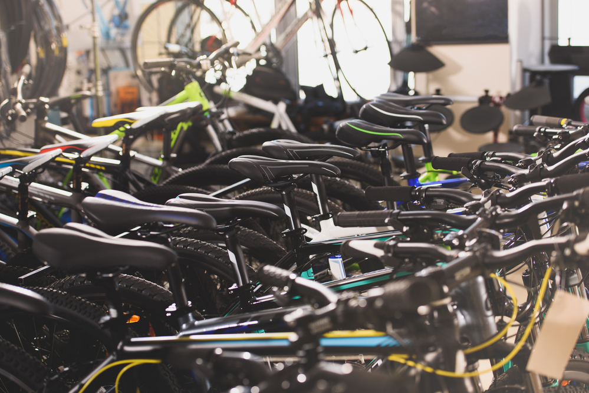
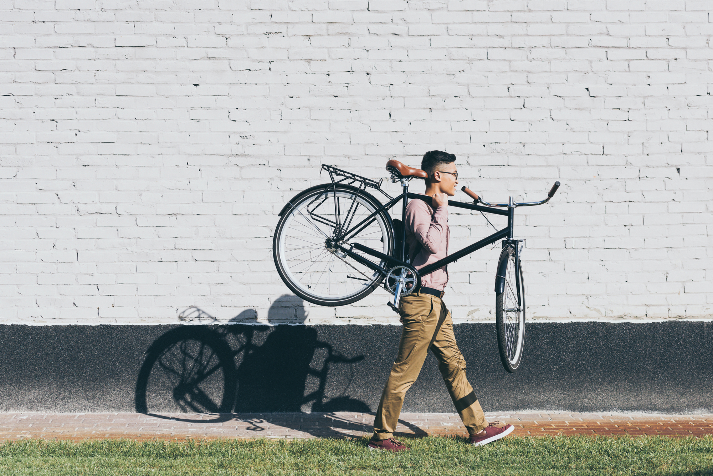
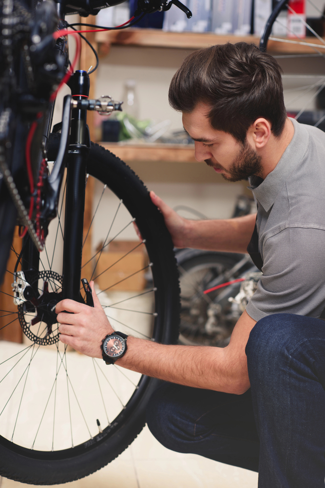

Bike King
repairs.
everything
the best
Bike Repairs in Kelso – Reliable Service from Bike King
Keep your bike in top condition with professional bicycle repairs and servicing at Bike King in Kelso, right in the heart of the Scottish Borders. Whether you're a daily commuter, weekend rider, or serious cyclist, our experienced mechanics are here to help you ride safely and smoothly.
What We Offer:
- Full bicycle servicing and safety checks
- Brake and gear adjustments
- Wheel truing and puncture repairs
- Drivetrain cleaning and replacement
- E-bike diagnostics and maintenance
- Custom setups and upgrades
We work on all types of bikes, including road, mountain, hybrid, electric, and kids' bikes. All repairs are completed with high-quality tools, genuine parts, and a quick turnaround time whenever possible.
Why Choose Bike King Repairs?
- Trusted local bike shop in Kelso
- Skilled mechanics with a passion for cycling
- Transparent pricing and friendly service
- Convenient access for riders across the Scottish Borders
Visit us today or give us a call to book your service. Whether you're heading out on the Tweed Cycle Route or just riding around town, we’ll make sure your bike is ready to go.
Our services
Expert bike sales, rentals, and repairs serving cyclists across the Scottish Borders
-

SHOP
New bikes, gear, and accessories in stock
New bikes, gear, and accessories in stock, Find top brands and expert advice at our Kelso bike shop, close to the Tweed Cycle Route
-

RENTAL
Hire road, mountain, or electric bikes today
Explore the Borders countryside with our quality bike rentals near Kelso and the Borderloop trail
-

REPAIRS
Fast, professional bike repair and servicing
Trusted bicycle repairs in Kelso – get back on the trails like the 4 Abbeys Cycle Route in no time